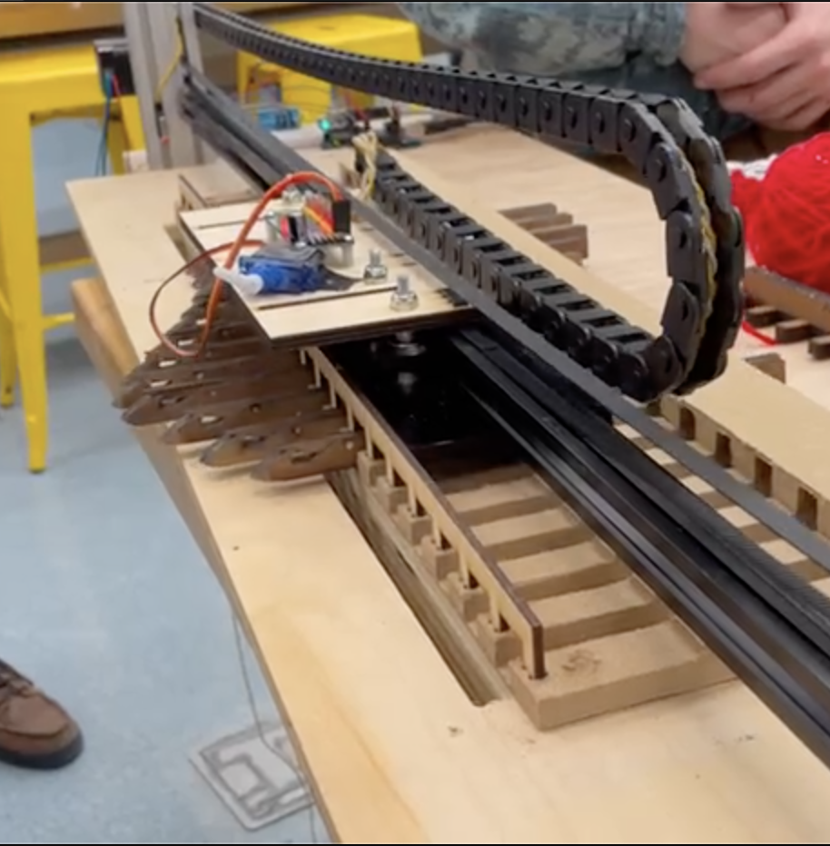

The Product
Big Knit automates the knitting process by combining firmware, electronics, and mechanical subsystems. With each piece working correctly in conjunction with the others, we get a knitting machine that knits with minimal user assistance. After telling the machine how long and wide the knit piece should be, the user casts on the yarn and sets up tension on the first row of stitches. Then, the machine moves through a simplified knitting process.
A 1-D gantry system powered by a stepper motor moves a linear cam, which causes a series of needles to slide. This creates the basic knitting movement described in How to Knit. With each movement, a new loop of yarn is deposited on each needle as the old one slides off, creating a stitch. All of this movement is dictated by code coming from an Arduino Uno and hooked up to a solderless breadboard to control limit switches, drivers, and other electronics.
See it in Action
Follow the links below to see the machine do it's thing!
See the motion without yarn
See the motion with yarn
System Schematic
See how it all fits together.